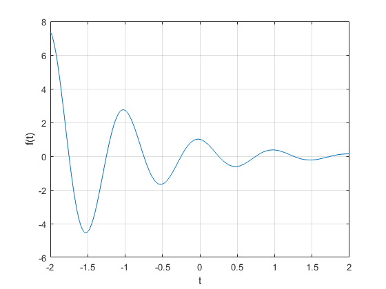
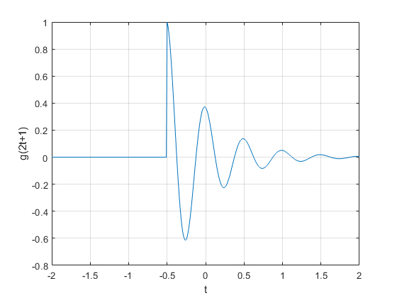

P02 SEÑALES EN TIEMPO CONTINUO
Señales y Sistemas 2TV1
Castañeda Ibañez Oscar
Marulanda Villasmil María Alejandra
Sánchez Cortés José Ángel
Torres Lira Josué Daniel
Vasquez Pineda Jose Antonio
Contents
- 1. Reproducir la sección 1.11 del libro de Lathi (versión de clase).
- 2. Resuelve el problema 1.2-2 usando las herramientas del paso anterior.
- 3. Resuelve el problema 1.11-1, los ejes deben mostrarse en el origen además de la edición de tu preferencia.
- 4. Construye la grafica de
- Python: https://colab.research.google.com/drive/1hi_Q55Z7tGSBMxsj_cEfzWzfnoM5dBKR#scrollTo=ZFLZF7XzZctTa
- 5. Resuelve el problema 1.11-3, agrega como inciso (e) la gráfica de para
1. Reproducir la sección 1.11 del libro de Lathi (versión de clase).
1.11 MATLAB: WORKING WITH FUNCTIONS
Working with functions is fundamental to signals and systems applications. MATLAB provides several methods of defining and evaluating functions. An understanding and proficient use of these methods are therefore necessary and beneficial.
1.11-1 Anonymous Functions Many simple functions are most conveniently represented by using MATLAB anonymous functions. An anonymous function provides a symbolic representation of a function defined in terms of MATLAB operators, functions, or other anonymous functions. For example, consider defining the exponentially damped sinusoid f(t) = cos(2πt).
f = @(t) exp(-t).*cos(2*pi*t);
In this context, the @ symbol identifies the expression as an anonymous function, which is assigned a name of f. Parentheses following the @ symbol are used to identify the function’s independent variables (input arguments), which in this case is the single time variable t. Input arguments, such as t, are local to the anonymous function and are not related to any workspace variables with the same names. Once defined, f(t) can be evaluated simply by passing the input values of interest. For example,
t = 0; f(t)
ans =
1
evaluates f(t) at t = 0, confirming the expected result of unity. The same result is obtained by passing t = 0 directly.
f(0)
ans =
1
Vector inputs allow the evaluation of multiple values simultaneously. Consider the task of plotting f(t) over the interval (−2 ≤ t ≤ 2). Gross function behavior is clear: f(t) should oscillate four times with a decaying envelope. Since accurate hand sketches are cumbersome, MATLAB-generated plots are an attractive alternative. As the following example illustrates, care must be taken to ensure reliable results. Suppose vector t is chosen to include only the integers contained in (−2 ≤ t ≤ 2), namely, [−2,−1, 0, 1, 2].
t = (-2:2);
This vector input is evaluated to form a vector output.
f(t)
ans =
7.3891 2.7183 1.0000 0.3679 0.1353
The plot command graphs the result, which is shown in Fig. 1.46.
plot(t,f(t)); xlabel('t'); ylabel('f(t)'); grid;

Figure 1.46 f(t) = cos(2πt) for t = (-2:2).
Grid lines, added by using the grid command, aid feature identification. Unfortunately, the plot does not illustrate the expected oscillatory behavior. More points are required to adequately represent f(t). The question, then, is how many points is enough? If too few points are chosen, information is lost. If too many points are chosen, memory and time are wasted. A balance is needed. For oscillatory functions, plotting 20 to 200 points per oscillation is normally adequate. For the present case, t is chosen to give 100 points per oscillation.
t = (-2:0.01:2); plot(t,f(t)); xlabel('t'); ylabel('f(t)'); grid;
Figure 1.47 f(t) = cos(2πt) for t = (-2:0.01:2).
The result, shown in Fig. 1.47, is an accurate depiction of f(t).
_____________________________________________________________________
Sampling theory, presented later, formally addresses important aspects of this question.
_____________________________________________________________________
1.11-2 Relational Operators and the Unit Step Function
The unit step function u(t) arises naturally in many practical situations. For example, a unit step can model the act of turning on a system. With the help of relational operators, anonymous functions can represent the unit step function. In MATLAB, a relational operator compares two items. If the comparison is true, a logical true (1) is returned. If the comparison is false, a logical false (0) is returned. Sometimes called indicator functions, relational operators indicates whether a condition is true. Six relational operators are available: <, >, <=, >=, ==, and =. The unit step function is readily defined using the >= relational operator.
u = @(t) 1.0.*(t>=0);
Any function with a jump discontinuity, such as the unit step, is difficult to plot. Consider plotting u(t) by using t = (-2:2).
t = (-2:2); plot(t,u(t)); xlabel('t'); ylabel('u(t)');
Figure 1.48 u(t) for t = (-2:2).
Two significant problems are apparent in the resulting plot, shown in Fig. 1.48. First, MATLAB automatically scales plot axes to tightly bound the data. In this case, this normally desirable feature obscures most of the plot. Second, MATLAB connects plot data with lines, making a true jump discontinuity difficult to achieve. The coarse resolution of vector t emphasizes the effect by showing an erroneous sloping line between t = −1 and t = 0. The first problem is corrected by vertically enlarging the bounding box with the axis command. The second problem is reduced, but not eliminated, by adding points to vector t.
t = (-2:0.01:2); plot(t,u(t)); xlabel('t'); ylabel('u(t)'); axis([-2 2 -0.1 1.1]);
Figure 1.49 u(t) for t = (-2:0.01:2) with axis modification.
The four-element vector argument of axis specifies x axis minimum, x axis maximum, y axis minimum, and y axis maximum, respectively. The improved results are shown in Fig. 1.49. Relational operators can be combined using logical AND, logical OR, and logical negation: &, , and , respectively. For example, (t>0)&(t<1) and ((t<=0)(t>=1)) both test if 0 < t < 1. To demonstrate, consider defining and plotting the unit pulse p(t) = u(t) − u(t − 1), as shown in Fig. 1.50: Since anonymous functions can be constructed using other anonymous functions, we could have used our previously defined unit step anonymous function to define p(t) as p = @(t) u(t)-u(t-1);.
p = @(t) 1.0.*((t>=0)&(t<1)); t = (-1:0.01:2); plot(t,p(t)); xlabel('t'); ylabel('p(t) = u(t)-u(t-1)'); axis([-1 2 -.1 1.1]);
Figure 1.50 p(t) = u(t)−u(t −1) over (−1 ≤ t ≤ 2).
For scalar operands, MATLAB also supports two short-circuit logical constructs. A short-circuit logical AND is performed by using &&, and a short-circuit logical OR is performed by using . Short-circuit logical operators are often more efficient than traditional logical operators because they test the second portion of the expression only when necessary. That is, when scalar expression A is found false in (A&&B), scalar expression B is not evaluated, since a false result is already guaranteed. Similarly, scalar expression B is not evaluated when scalar expression A is found true in (A||B), since a true result is already guaranteed.
1.11-3 Visualizing Operations on the Independent Variable
Two operations on a function’s independent variable are commonly encountered: shifting and scaling. Anonymous functions are well suited to investigate both operations. Consider g(t) = f(t)u(t) = cos(2πt)u(t), a causal version of f(t). MATLAB easily multiplies anonymous functions. Thus, we create g(t) by multiplying our anonymous functions for f(t) and
g = @(t) f(t).*u(t);
A combined shifting and scaling operation is represented by g(at + b), where a and b are arbitrary real constants. As an example, consider plotting g(2t +1) over (−2 ≤ t ≤ 2). With a = 2, the function is compressed by a factor of 2, resulting in twice the oscillations per unit t. Adding the condition b > 0 shifts the waveform to the left. Given anonymous function g, an accurate plot is nearly trivial to obtain. Figure 1.51 confirms the expected waveform compression and left shift. As a final check, realize that function g(·) turns on when the input argument is zero. Therefore, g(2t + 1) should turn on when 2t +1 = 0 or at t = −0.5, a fact again confirmed by Fig. 1.51.
t = (-2:0.01:2); plot(t,g(2*t+1)); xlabel('t'); ylabel('g(2t+1)'); grid;
Figure 1.51 g(2t +1) over (−2 ≤ t ≤ 2)
_____________________________________________________________________
Although we define g in terms of f and u, the function g will not change if we later change either f or u unless we subsequently redefine g as well.
_____________________________________________________________________
Next, consider plotting g(−t + 1) over (−2 ≤ t ≤ 2). Since a < 0, the waveform will be reflected. Adding the condition b > 0 shifts the final waveform to the right.
t = (-2:0.01:2); plot(t,g(-t+1)); xlabel('t'); ylabel('g(-t+1)'); grid;
Figure 1.52 g(−t +1) over (−2 ≤ t ≤ 2). Figure 1.52 confirms both the reflection and the right shift. Up to this point, Figs. 1.51 and 1.52 could be reasonably sketched by hand. Consider plotting the more complicated function h(t) = g(2t + 1) + g(−t + 1) over (−2 ≤ t ≤ 2) (Fig. 1.53); an accurate hand sketch would be quite difficult. With MATLAB, the work is much less burdensome.
t = (-2:0.01:2); plot(t,g(2*t+1)+g(-t+1)); xlabel('t'); ylabel('g(2*t+1)+g(-t+1)'); grid;
Figure 1.53 h(t) = g(2t +1)+g(−t +1) over (−2 ≤ t ≤ 2)
1.11-4 Numerical Integration and Estimating Signal Energy Interesting signals often have nontrivial mathematical representations. Computing signal energy, which involves integrating the square of these expressions, can be a daunting task. Fortunately, many difficult integrals can be accurately estimated by means of numerical integration techniques. Even if the integration appears simple, numerical integration provides a good way to verify analytical results. To start, consider the simple signal x(t) = (u(t)−u(t−1)). The energy of x(t) is expressed . Integrating yields  = 0.5 (1− ) 0.4323. The energy integral can also be evaluated numerically. Figure 1.27 helps illustrate the simple method of rectangular approximation: evaluate the integrand at points uniformly separated by t, multiply each by t to compute rectangle areas, and then sum over all rectangles. First, we create function x(t).
= 0.5 (1− ) 0.4323. The energy integral can also be evaluated numerically. Figure 1.27 helps illustrate the simple method of rectangular approximation: evaluate the integrand at points uniformly separated by t, multiply each by t to compute rectangle areas, and then sum over all rectangles. First, we create function x(t).
x = @(t) exp(-t).*((t>=0)&(t<1));
With t = 0.01, a suitable time vector is created.
t = (0:0.01:1);
The final result is computed by using the sum command.
E_x = sum(x(t).*x(t)*0.01)
E_x =
0.4367
The result is not perfect, but at 1% relative error it is close. By reducing t, the approximation is improved. For example, t = 0.001 yields = 0.4328, or 0.1% relative error. Although simple to visualize, rectangular approximation is not the best numerical integration technique. The MATLAB function quad implements a better numerical integration technique called recursive adaptive Simpson quadrature. To operate, quad requires a function describing the integrand, the lower limit of integration, and the upper limit of integration. Notice that no t needs to be specified. To use quad to estimate , the integrand must first be described.
x_squared = @(t) x(t).*x(t);
Estimating immediately follows.
E_x = quad(x_squared,0,1)
E_x =
0.4323
In this case, the relative error is −0.0026%.
The same techniques can be used to estimate the energy of more complex signals. Consider g(t), defined previously. Energy is expressed as . A closed-form solution exists, but it takes some effort. MATLAB provides an answer more quickly
g_squared = @(t) g(t).*g(t);
_____________________________________________________________________
A comprehensive treatment of numerical integration is outside the scope of this text. Details of this particular method are not important for the current discussion; it is sufficient to say that it is better than the rectangular approximation.
_____________________________________________________________________
Although the upper limit of integration is infinity, the exponentially decaying envelope ensures g(t) is effectively zero well before t = 100. Thus, an upper limit of t = 100 is used along with t = 0.001.
t = (0:0.001:100);
E_g = sum(g_squared(t)*0.001)
%
E_g =
0.2567
2. Resuelve el problema 1.2-2 usando las herramientas del paso anterior.
u = @(t) 1.0.*(t>=0); g= @(t) -t.*(u(t+4)-u(t))+((t/2).*(u(t)-u(t-2))); t= -8:0.01:8; plot(t,g(t)); title('x(t)') plano = gca; plano.XAxisLocation = "origin"; plano.YAxisLocation = "origin"; plano.Box = "off"; grid on
plot (t,g(t-4)) title('x(t-4)') plano = gca; plano.XAxisLocation = "origin"; plano.YAxisLocation = "origin"; plano.Box = "off"; grid on

plot (t,g(t/1.5)) title('x(t/1.5)') plano = gca; plano.XAxisLocation = "origin"; plano.YAxisLocation = "origin"; plano.Box = "off"; grid on
plot (t,g(-t)) title('x(-t)') plano = gca; plano.XAxisLocation = "origin"; plano.YAxisLocation = "origin"; plano.Box = "off"; grid on
plot (t,g((2*t)-4)) title('x(2t-4)') plano = gca; plano.XAxisLocation = "origin"; plano.YAxisLocation = "origin"; plano.Box = "off"; grid on
plot (t,g(2-t)) title('x(2-t)') plano = gca; plano.XAxisLocation = "origin"; plano.YAxisLocation = "origin"; plano.Box = "off"; grid on %
3. Resuelve el problema 1.11-1, los ejes deben mostrarse en el origen además de la edición de tu preferencia.
u = @(t) 1.0.*(t>=0); g = @(t) 0.5.*((2.^(-t).*u(t-pi)-(2.^(t).*u(-t-pi)))); t=-5:0.01:5; plot(t,g(t)); plano = gca; plano.XAxisLocation = "origin"; plano.YAxisLocation = "origin"; plano.Box = "off"; xlabel('t');ylabel('g(t)'); grid; %
4. Construye la grafica de
Python: https://colab.research.google.com/drive/1hi_Q55Z7tGSBMxsj_cEfzWzfnoM5dBKR#scrollTo=ZFLZF7XzZctTa
M = 250; t = -2:4/(M-1):2; y = zeros(1,M); N = 10; for k = 1:N y = y+ cos(pi*k*t); end plot(t,y) plano = gca; plano.XAxisLocation = "origin"; plano.YAxisLocation = "origin"; plano.Box = "off"; a= title('x(t)'); set(a,'fontsize',14); a= xlabel('x'); set(a,'fontsize',20); a = ylabel('y'); set(a,'fontsize',20); a = zlabel('z'); set(a,'fontsize',20); grid;
Gráfica Python

5. Resuelve el problema 1.11-3, agrega como inciso (e) la gráfica de para
1.11-3
u = @(t) 1.0.*(t>=0); x= @(t) exp(t.*(1+(i*2*pi)).*u(-t)); y= @(t) real(2.*x((-5-t)./2));
a)
a=0.5; t=-10:0.01:10; plot(real(x(t)),imag(x(t.*a))); title('x(t) con a=0.5'); xlabel('Re');ylabel('Im'); a=1; plot(real(x(t)),imag(x(t.*a))); title('x(t) con a=1'); xlabel('Re');ylabel('Im'); a=2; plot(real(x(t)),imag(x(t.*a))); title('x(t) con a=2'); xlabel('Re');ylabel('Im');
The shape of the figure changes a lot when you modiffy the scale of a), perhabs, the scale in the factor a) is very important in this case.
b)???
plot(t, real(y(t))); xlabel('t');ylabel('y(t)');